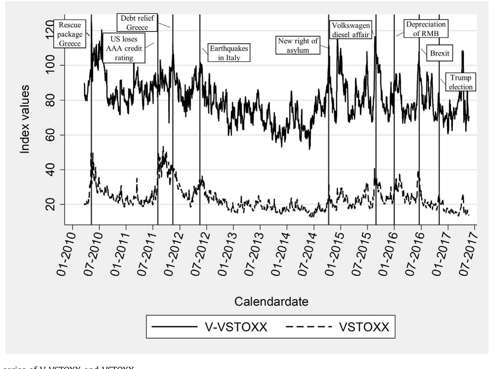
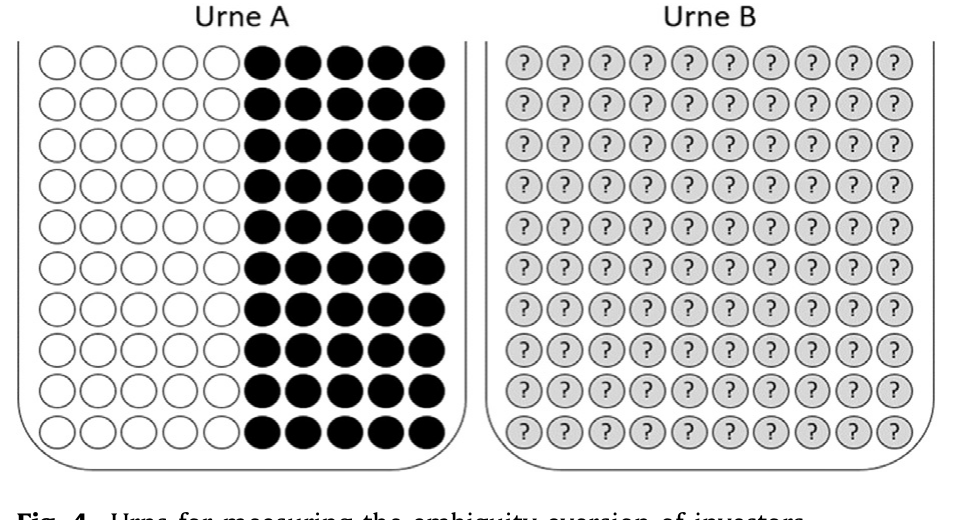
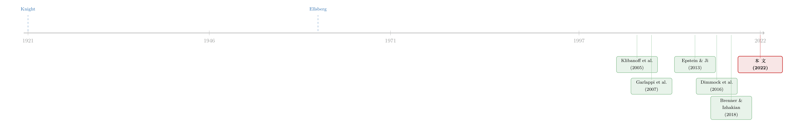

算不准「风险有多大」的那些天，散户在做什么？
本文读的是 Kostopoulos, Meyer & Uhr (2022, Journal of Financial Economics)：他们用「波动率的波动率」V-VSTOXX 来度量市场层面的 模糊性 (ambiguity)，把它接到一家德国券商超过 10 万名散户的逐笔成交记录上，发现——当模糊性骤升时，散户会交易得更频繁，同时卖出风险资产、降低风险敞口，而且这种降险在随后十天里并不回补。被问卷验证为「模糊厌恶」的那群人，受冲击的程度是平均投资者的四倍。
1 引言：风险，和「连风险都算不准」
先做一个区分。
你站在一台轮盘前，知道有 18 个红格、18 个黑格、2 个绿格——这是 风险 (risk)：未来的结果不确定，但结果背后的概率分布是已知的。现在换一个场景：有人端来一个不透明的罐子，里面装着 100 个红球和黑球，但红黑各多少，你不知道。你押红球能赢钱，可你连「赢的概率」都说不上来。这第二种不确定，Knight (1921) 称之为 Knight 不确定性 (Knightian uncertainty)，Ellsberg (1961) 把它叫作 模糊性 (ambiguity)。
模糊性和风险的根本区别在于：风险里，分布是已知的；模糊性里，连分布本身都是未知的。Ellsberg 那个著名的罐子实验告诉我们，大多数人面对这两个罐子时，宁愿去赌那个概率明明白白的，也不愿碰那个「说不清」的——这就是 模糊厌恶 (ambiguity aversion)。
理论金融学早就盯上了这件事。Epstein and Ji (2013) 进一步把模糊性拆成两块：对「漂移」的模糊（你不确定一只股票的期望收益是多少）和对「波动率」的模糊（你不确定它的波动有多大）。前一类研究已经汗牛充栋（Anderson et al., 2009；Ju and Miao, 2012），但 Epstein and Ji 留下了一句话：关于「对波动率的模糊」到底在经验上重不重要，我们还知道得太少。
这篇论文，正是要去填这个洞。
一句话记住三个变量的层次：VSTOXX 是市场对未来 30 天波动率的预期（「风险」）；V-VSTOXX 是市场对未来 30 天波动率本身有多不确定的度量（「模糊」）——它是波动率的波动率 (volatility of volatility)，也就是「算不准风险有多大」的那一层。
2 一把怎样的尺子：用「波动率的波动率」量模糊
要做实证，第一步永远是：模糊性，怎么量？
文献里一直没有共识。有人用专业预测者之间的分歧度（survey-based，如 Anderson et al., 2009）；有人用报纸里数出来的经济政策不确定性 (economic policy uncertainty, EPU, Baker et al., 2016)；还有人用市场价格里隐含的信息。本文选了最后一条路，理由很硬：它前瞻、市场化、模型无关、每日可得，而且建立在流动性极好的期权价格上。
具体地说，作者用了 V-VSTOXX——它是 VSTOXX 这个欧洲版「恐慌指数」的 30 天隐含波动率。注意这个嵌套：VSTOXX 衡量市场对未来 30 天 Euro Stoxx 波动率的预期，而 V-VSTOXX 衡量的是这个波动率预期本身有多不确定。用作者的话说，它正是 Epstein and Ji (2013) 所谓「对波动率的模糊」。背后的理论支撑来自 Klibanoff et al. (2005)、Nau (2006)、Segal (1987)：二阶信念（对概率的概率）恰恰是刻画模糊性的合适对象，而波动率的波动率就是一种二阶信念。
为什么用欧洲的指标去研究德国散户？因为德国本土没有 VVIX 那样的「波动率的波动率」。但作者给出了一条干净的桥：VSTOXX 与德国本土的 VDAX 相关系数高达 0.96，Euro Stoxx 与 DAX 的相关系数是 0.95。换言之，欧洲市场的模糊性，是德国市场模糊性的一个相当好的代理。

Figure 1: The time series of V-VSTOXX and VSTOXX
如图 1 所示，V-VSTOXX 的每一个尖峰，几乎都能对上一个「让人对未来believe分歧」的事件。2015 年 9 月那一根，正是大众「柴油门」爆出的当天——对一个高度依赖汽车工业的国家，这是关于未来股价的巨大模糊。2010 年 5 月的峰值（124.87）是欧债危机的起点；而 51.76 的谷底落在 2014 年 6 月，恰是危机将熄未熄之时。这种「轶事级」的对应，本身就是 V-VSTOXX 抓到了真东西的旁证。
本文真正用来识别的变量，是 V-VSTOXX 的每日变动 dVVSTOXX——模糊性的「创新」(innovation)。表 1 告诉我们它的基本面貌：N=1469，均值近乎为零（−0.0117），标准差 3.99，区间从 −22.65 到 31.29。而为了把模糊性的影响和波动率本身的影响分开，作者在每一个回归里都同时放进 VSTOXX 的变动 dVSTOXX——这是全文识别策略的命门所在。
模糊和风险是高度纠缠的。dVVSTOXX 与 dVSTOXX 的相关系数是 0.36，并不低。所以「模糊性独立于风险起作用」这个结论，必须建立在控制住 dVSTOXX 之后模糊性依然显著的基础上——否则你测到的可能只是波动率换了个名字。
3 识别策略：把「市场」和「个人」摆在一起
这篇论文的识别巧思，在于它把一个外生的、随时间变动的市场总量（模糊性创新），接到了一份个人层面的、带时间戳的逐笔交易面板上。
数据来自一家德国大型网络券商，覆盖超过 10 万名散户从 2010 年 3 月（V-VSTOXX 上线）到 2015 年 12 月的所有交易；这套数据是 Barber and Odean (2000) 那份著名美国散户数据的欧洲翻版。作者剔除了所有接受投资顾问建议的客户——他们想看的是家庭自己的决策，而不是顾问的嘴。
关键在于这是一个 个人内 (within-person) 分析：通过纳入投资者固定效应，作者把每个人「平均而言爱不爱交易、爱不爱冒险」这种不可观测的个体特质吸收掉，只问一件事——当市场模糊性比平时高时，同一个人的行为相比他自己的常态发生了什么变化。再叠加时间维度的控制变量，模糊性的「市场总量」属性，使它对任何单个散户而言都近似外生：你一个人的买卖，撼动不了 V-VSTOXX。
研究分成两层推进。第一层是无条件的：模糊性升高，散户的「活动」会怎样？活动有两个维度——登录 (logins) 和交易 (trades)。第二层是有条件的：给定散户因为模糊性而出手了，他们究竟在如何调整组合？后者才是全文的靶心——风险承担 (risk-taking)。
4 主要结果：更频繁地出手，然后退出风险
先看活动。 模糊性的创新与更高的投资者活动正相关：人们登录得更勤，也交易得更多。直觉上说得通——当风险都变得「算不准」，股市反而更抓人眼球，于是人们更频繁地打开账户、更频繁地动手。
但真正关键的一步在于风险承担。 作者发现，模糊性冲击会让散户主动卖出股票及类似的风险资产，压低自己对市场的敞口。而且——这是最有分量的一点——这种降险在随后十天里不会反转。它不是一次惊慌后的过度反应、过两天又买回来；它是一次持续的撤退。这与一批理论模型的预言严丝合缝：模糊性冲击会促使投资者削减风险资产份额，甚至退出市场（Mele and Sangiorgi, 2015；Garlappi et al., 2007；Peijnenburg, 2018）。
然后是那个让人信服的对照：当作者把模糊性 (V-VSTOXX) 的效应和波动率 (VSTOXX) 的效应摆在一起较量时，只有模糊性在散户的交易行为里给出统计显著的结果。也就是说，把「风险」这条线控制住之后，留下来仍在起作用的，是「模糊」。对散户而言，模糊性至少和波动率一样重要。
5 反转：是「模糊厌恶」的人在撤退
到这里，一个聪明的读者会追问：你怎么知道你测到的真的是「模糊」，而不是别的什么和 V-VSTOXX 一起波动的东西？
作者的回答漂亮：如果这真是模糊，那么对模糊更敏感的人，反应应该更剧烈。 于是他们去借了 Ellsberg 的罐子。
作者请银行随机抽取 1 万名客户参加一个问卷，里面嵌了一道 Ellsberg 式的罐子题，据此把人分成模糊厌恶、模糊中性、模糊偏好三类。最终 644 人作答，其中 58.7% 模糊厌恶、12% 中性、29.3% 模糊偏好——这个分布与 Dimmock et al. (2016) 高度一致，说明样本有代表性。

Figure 4: Urns for measuring the ambiguity aversion of investors
如图 4 所示，这正是用来度量模糊厌恶的两个罐子：一个已知红黑各半，一个比例未知。于是反转出现了： 模糊厌恶者对模糊性创新的脆弱程度，是平均投资者的四倍。更戏剧化的是，估计系数的符号在两类人之间翻转了——模糊厌恶者在遭遇模糊冲击时降低风险敞口，而模糊偏好者反其道而行。作者据此论证：V-VSTOXX 的变动确确实实代表了模糊性的创新，而不是别的混淆物。这是一种很难伪造的「内在一致性」检验。
这一笔，把全文从「相关性」往「机制」推进了一大步。（关于「模糊性如何把散户钉在原地」这条线，本博客此前还读过同一组作者的另一篇研究，参见《算不清的那一天：当「不确定」把投资者钉在了原地》。）
6 三道加固：让结论不只活在一个指标里
一个只在单一代理变量上成立的发现，是脆弱的。作者用三条独立的路去加固。
第一，换一把「长期」的尺子。 V-VSTOXX 是高频的、反映短期模糊的市场指标。作者另用了 专业预测者调查 (Survey of Professional Forecasters, SPF) ——欧洲央行按季度收集的、关于未来实际 GDP 增速的预测——以预测者之间标准差的四分位距 (interquartile range) 作为一个长期模糊度量。这里作者紧跟 Calvet et al. (2009) 的方法，把组合总变动拆成被动的市场涨跌和主动的（投资者自主再平衡）变动，只看后者。结论复制了：分歧度上升，平均投资者的主动变动为负——也就是主动卖出市场。当只看那些当月确有非零主动变动的投资者时，效应不仅依然存在，量级还明显放大。
第二，控制住别的模糊度量。 作者按 Brenner and Izhakian (2018) 为 Euro Stoxx 重建了他们的 omega 模糊度量，又用 Baker et al. (2016) 的 EPU 作报纸口径的控制。无论加入哪一个，结论都不变质；甚至用它们替换掉 V-VSTOXX，结果也站得住。
第三，去测 Hirshleifer (2001) 的一个猜想：偏差应该在模糊高的时候更严重。 作者用 Da et al. (2015) 提出的 FEARS 指数（从 Google 对「金融危机」「破产」「衰退」等负面词的搜索量里聚合出的情绪代理）来检验：情绪对风险选择的影响，是否在高模糊期更强？答案是肯定的——情绪效应在高、低模糊期都存在，但在高模糊期显著更大。模糊像一个放大器，把情绪对决策的撬动放大了。
7 文献脉络
把这条线捋一捋，会看到一个从「思想实验」一路走到「逐笔成交」的过程。
起点是 Knight (1921) 对风险与不确定性的区分，和 Ellsberg (1961) 那个罐子——它第一次用实验把「模糊厌恶」摆上台面。接着是一轮理论的繁荣：Klibanoff et al. (2005)、Nau (2006)、Segal (1987) 论证了二阶信念是刻画模糊的合适对象；Garlappi et al. (2007)、Easley and O'Hara (2009)、Epstein and Schneider (2010) 则把模糊厌恶接进了组合选择与市场参与，预言它会压低风险资产配置、甚至导致不参与。
然后，一个自然的问题是：模糊到底该用什么量？这里分出三条支流——调查口径（Anderson et al., 2009；Drechsler, 2013）、报纸口径（Baker et al., 2016）、市场口径。而在市场口径里，波动率的波动率逐渐被公认为好的模糊代理（Baltussen et al., 2018；Bollerslev et al., 2009；Hollstein and Prokopczuk, 2018；Huang et al., 2019）。与此同时，Epstein and Ji (2013) 把模糊精细化为「对漂移」与「对波动率」两类，并喊话：后者的经验证据太少。

实证这一侧，长期被横截面证据主导：Dimmock et al. (2016) 证明更模糊厌恶的人更少参与股市；Bianchi and Tallon (2018) 发现模糊厌恶者本土偏好更强、再平衡更频繁。但这些都是「个体特质的截面差异」。本文站到的位置，是把镜头从「个体差异」转向「总量随时间的波动」——它问的不是「谁更怕模糊」，而是「当模糊本身在变动时，同一个人会怎么做」。于是它给了一个互补的答案：低风险份额不只来自最初的资产配置决策，也来自对模糊冲击作出反应的交易决策。
8 评论与延伸（Q&A + 研究方向）
(a) 几个可能的疑问
Q：V-VSTOXX 和 VSTOXX 相关系数 0.36，怎么保证测到的是「模糊」而不是「风险」换了名字？
靠两点。其一，作者在每一个回归里都同时放入
dVSTOXX，并报告：当二者同场较量时，只有模糊性显著。其二，更狠的是横截面异质性检验——只有被问卷判定为模糊厌恶的人系数才大、且符号与模糊偏好者相反。风险厌恶解释不了这种「按模糊偏好分组的符号翻转」。
Q：用欧洲的 V-VSTOXX 研究德国散户，会不会代理误差太大？
作者给的桥是相关系数：VSTOXX 与德国本土 VDAX 是
0.96，Euro Stoxx 与 DAX 是0.95。在没有德国本土「波动率的波动率」的现实约束下，这是个相当强的代理。当然，它仍是代理，残差里那 4% 的不同步是否系统性地偏向某类事件，无从知晓。
Q：「降险后十天不反转」——会不会只是因为散户本来就懒得动？
不是。识别用的是个人内变动并控制了个体固定效应，比较的是同一个人相对自己常态的偏离。而且活动层面的结果显示模糊期里人们交易更频繁——他们明明在动手，动手的方向却是持续卖出，而非来回折腾。
Q：模糊厌恶者只有 644 人作答，样本会不会太小、有自选择？
样本量确实是软肋。但
58.7%/12%/29.3%的三分布与 Dimmock et al. (2016) 高度吻合，缓解了「应答者非典型」的担忧。真正的风险在于：作答者可能恰好是更关注账户、更活跃的那批人——若如此，模糊厌恶组的「四倍敏感」会被高估。
Q：这和「波动率冲击下散户去杠杆」有什么本质不同？
本质在于「算不准」这一层。波动率高，是已知分布下的坏天气；模糊高，是连天气预报都不可信。论文的贡献正是把后者从前者里剥出来，并证明剥出来之后它独立地、甚至更强地驱动了散户退出风险。
Q：对资产定价有什么含义？
如果模糊厌恶者在总量模糊上升时系统性地抛售风险资产，那么模糊性就应当被定价——这与 Brenner and Izhakian (2018)「风险与模糊都影响股权溢价」相呼应。本文提供的是需求侧的微观证据：价格里的模糊溢价，背后有真实的散户在用脚投票。
(b) 几个可能的研究问题与提案
1. 把这套逻辑搬到公司债/信用市场。 【经济故事】信用市场的「模糊」可能比股市更尖锐——违约是离散、长尾、分布难估的事件。当「波动率的波动率」（比如 CDX 期权的隐含波动率的波动率）骤升时，散户与小机构是否系统性地撤出高收益债、涌入投资级？这正好接上信用利差里「难以解释的成分」。 【可行性】中。难点在散户层面的公司债逐笔数据稀缺；可退而求其次，用 TRACE + 债券型 ETF/共同基金的资金流，配合一个 vol-of-vol 信用指标做时间序列识别。识别不如本文干净，但 doable。
2. 外资持有人对「模糊」更敏感吗？ 【经济故事】外国投资者对东道国的分布估计天然更「模糊」（信息劣势、制度不熟）。当一国总量模糊上升时，外资是否比本土投资者退得更快、更不回补？这把模糊厌恶与「本土偏好」(home bias) 直接对接（呼应 Bianchi and Tallon, 2018）。 【可行性】中高。可用各国证券持有的微观或半微观数据（如 TIC、ECB SHS），构造国别 V-VIX 类指标，做面板内识别。挑战是把「模糊」与「风险」「汇率」分离。
3. 模糊冲击下的「流动性供给」侧。 【经济故事】本文讲的是散户作为需求方撤退。那谁来接盘？模糊高企时做市商的报价、深度、价差如何变化？如果模糊厌恶同样作用于做市商的风险限额，价格冲击会被放大。 【可行性】中。需要带做市商身份的限价订单簿数据，配合 vol-of-vol 指标。识别上可借券商宕机等准实验切开需求与供给（思路类似本博客读过的《当波动率曲面被「散户」推歪》）。
4. 模糊度量之间的「赛马」。 【经济故事】本文用了 V-VSTOXX、SPF 分歧、omega、EPU 四种度量却未系统比较谁更能预测散户行为。一篇专门的「模糊度量横向评测」会很有价值——尤其因为已有文献报告这些度量彼此相关性不高（Huang et al., 2019）。 【可行性】高。数据全是公开或半公开的，方法是把多个度量同场放入同一套个人内回归，看谁的边际解释力最强。纯粹的实证活儿，doable。
9 我的判断
这篇论文最值得称道的地方，是它把一个长期停留在理论与横截面的命题，落到了个人内、随时间的逐笔证据上，并且用「按模糊厌恶分组、符号翻转」这一手，把「相关」往「机制」推了一大步——这比再多十个稳健性表格都更让人信服。Epstein and Ji (2013) 那句「对波动率的模糊在经验上重不重要」，至少在散户行为这一侧，被回答了。
担忧也诚实地摆在那里。其一，模糊与风险的纠缠（0.36）是结构性的，控制 dVSTOXX 是必要却未必充分的处理——理想情况下，人们想看到一个能把二者外生分开的事件。其二，问卷样本只有 644 人，「四倍敏感」这个亮眼数字背后的统计精度与自选择，值得读者保留三分。其三，全文是一家券商、一个国家、一段不算长的样本期（2010–2015），其中还嵌着欧债危机这段极端期——结论在「平静的市场」里是否同样成立，留有疑问。
后续我最想看到的，是把这套识别搬进信用市场和外资持有人：散户在股市里对模糊的撤退已被刻画，但债券的离散违约结构让「模糊」更尖锐、利益相关者（保险、养老金、外资）也更值得追问。如果能在那里复制出同样的「模糊独立于风险、且只咬模糊厌恶者」的图景，这条研究线才算真正立住。
参考文献
- Anderson, E.W., Ghysels, E., Juergens, J.L. (2009). The impact of risk and uncertainty on expected returns. Journal of Financial Economics 94, 233–263.
- Baker, S.R., Bloom, N., Davis, S.J. (2016). Measuring economic policy uncertainty. Quarterly Journal of Economics 131, 1593–1636.
- Baltussen, G., van Bekkum, S., van der Grient, B. (2018). Unknown unknowns: uncertainty about risk and stock returns. Journal of Financial and Quantitative Analysis 53, 1615–1651.
- Barber, B.M., Odean, T. (2000). Trading is hazardous to your wealth: the common stock investment performance of individual investors. Journal of Finance 55, 773–806.
- Brenner, M., Izhakian, Y. (2018). Asset pricing and ambiguity: empirical evidence. Journal of Financial Economics 130, 503–531.
- Calvet, L.E., Campbell, J.Y., Sodini, P. (2009). Fight or flight? Portfolio rebalancing by individual investors. Quarterly Journal of Economics 124, 301–348.
- Da, Z., Engelberg, J., Gao, P. (2015). The sum of all FEARS investor sentiment and asset prices. Review of Financial Studies 28, 1–32.
- Dimmock, S.G., Kouwenberg, R., Mitchell, O.S., Peijnenburg, K. (2016). Ambiguity aversion and household portfolio choice puzzles: empirical evidence. Journal of Financial Economics 119, 559–577.
- Ellsberg, D. (1961). Risk, ambiguity, and the savage axioms. Quarterly Journal of Economics 75, 643–669.
- Epstein, L.G., Ji, S. (2013). Ambiguous volatility and asset pricing in continuous time. Review of Financial Studies 26, 1740–1786.
- Garlappi, L., Uppal, R., Wang, T. (2007). Portfolio selection with parameter and model uncertainty: a multi-prior approach. Review of Financial Studies 20, 41–81.
- Hirshleifer, D. (2001). Investor psychology and asset pricing. Journal of Finance 56, 1533–1597.
- Klibanoff, P., Marinacci, M., Mukerji, S. (2005). A smooth model of decision making under ambiguity. Econometrica 73, 1849–1892.
- Knight, F.H. (1921). Risk, Uncertainty and Profit. Houghton Mifflin, New York.
- Mele, A., Sangiorgi, F. (2015). Uncertainty, information acquisition, and price swings in asset markets. Review of Economic Studies 82, 1533–1567.
- Peijnenburg, K. (2018). Life-cycle asset allocation with ambiguity aversion and learning. Journal of Financial and Quantitative Analysis 53, 1963–1994.